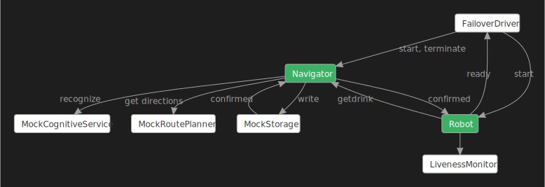
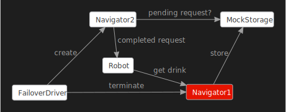

Failover robot navigator service with actors
Wikipedia provides this definition: “Failover is switching to a redundant or standby computer server, system, hardware component or network upon the failure or abnormal termination of the previously active application, server, system, hardware component, or network. Systems designers usually provide failover capability in servers, systems or networks requiring near-continuous availability and a high degree of reliability.”
This sample implements a failover scenario in a system where an instance of a service is terminated and replaced by a new one, unlike the Failover Coffee Machine sample, which is about applying the failover concept to the firmware of an automated espresso machine.
In this scenario there is a Robot that must serve drinks to people in a room:

-
Before starting to serve the next client the
Robotis always at anInitialLocationin the room. -
In order to do its job the
Robotneeds the help of a service called theNavigator, which when provided with the latest picture of the room, finds a person who needs to be served next and sends the details (adult or minor, location) of that person to theRobot. -
It is not always possible to follow the straight line connecting the
Robot’s location with that of the selected client as there are obstacles, like furniture, in the room. Thus, theRobotasks theNavigatorto produce a collision-free route from theRobot’s location to the person who will be served. TheNavigatorprovides the requested route that must be reached, with the last being that of the client. A route is simply a list of consecutive straight line segments. -
The
Robottraverses the route and reaches the client. Then theRobotselects randomly an appropriate drink for the client: alcoholic for an adult and non-alcoholic for a minor client. -
The
Robotpours a glass of the selected drink for the client and retreats to itsInitialLocation.
The steps 1 to 5 above are repeated continuously.
To make this a failover test, at random times the Navigator is killed and a new Navigator is
created to replace the old one. When this happens it is required that the system will continue to
operate flawlessly: no data (request or response) between the Robot and a Navigator will be
lost, and the Robot will not stop doing its job.
The following diagram depicts the Failover workflow in this sample:

Do note:
1. This is a general diagram that can be used not only in this scenario, but for any other
scenarios involving a robot that operates with the help of object recognition and route
planning.
2. The green nodes represent the product code we are testing here, and everything else is mock test
infrastructure. The main goal is to show the use of coyote test in finding concurrency issues
even at the design stage when the actual implementation hasn’t started. For this reason we’ve
only provided mock implementations of the cognitive service, the route planner, and the storage
service. The Navigator doesn’t know these are mock implementations.
3. The sample uses the FailoverDriver component to perform the termination of the Navigator and
the creation of a new Navigator. Also a MockStorage component is used to store the state
needed to restart the newly-created instance without loss of state.
The Robot and the Navigator are modeled as state
machines and they are started by another state machine
called FailoverDriver.
The FailoverDriver lets the first Navigator instance run for a bit then it randomly kills it by
sending it the TerminateEvent, then it starts a new Navigator. The new Navigator instance
needs to figure out the state of any previous request: was the prior Navigator killed while having
an incompletely processed request from the Robot or not? To be able to do so the Navigator
stores any newly received request from the Robot in the MockStorage where it remains until the
request is completely processed and the response is sent to the Robot and at that moment the
Navigator deletes the pending request record from the MockStorage. Note that this is going one
step further than the Coffee Machine example. In this example, not only are we testing that the
Navigator can restart successfully, but we are also testing that the Robot is also able to handle
that failover condition. The following diagram shows the overall plan where Navigator2 is able
to complete the request started by Navigator1:

The MockStorage is an Actor that provides simple key-value storage for persisting data and its
instance lives across all instances of the Navigator. MockStorage makes Navigator failover
possible. The MockStorage component, as its name implies, is a mock of a real-world service that
provides similar storage capabilities.
Likewise, the MockCognitiveService and MockRoutePlanner are mocks of real-world services
providing cognitive services (such as object identification) and motion-path planning.
Some safety Asserts are placed in the code that verify certain important things, including:
- on reaching the client the Robot’s coordinates must be the same as the client’s.
- the key retrieved from the MockStorage when requesting a read for a saved Robot’s request is
an expected non-null string.
- the Navigator checks that after MockStorage performs a write operation to save a Robot’s
request this has not overwritten another existing value for the same storage key. This ensures a
request from the Robot is not lost.
- all required non-null parameters for MockStorage operations (such as key or requestorId) are
indeed non-null.
There is a LivenessMonitor that monitors the execution of the system to make sure it never gets
stuck, i.e., the Robot always gets a valid response to any of its requests from the Navigator
and serves the selected client. See Liveness Checking.
A number of excellent bugs were found by Coyote during the development of this sample, and this illustrates the fact that Coyote can be applied to find bugs quickly, even in the design stage, before coding and pushing to production.
What you will need
To run the DrinksServingRobotActors example, you will need to:
- Install Visual Studio 2022.
- Install the .NET 8.0 version of the coyote tool.
- Be familiar with the
coyotetool. See using Coyote. - Clone the Coyote git repo.
Build the sample
You can build the sample by following the instructions here.
Running and testing the Drink Serving Robot
Now you can run the DrinksServingRobotActors application:
./Samples/bin/net8.0/DrinksServingRobotActors.exe
When you run the executable like this without using coyote test (this is called running in
production mode), you will get infinite console output, that you can to terminate by pressing
ENTER, similar to this:
<FailoverDriver> #################################################################
<FailoverDriver> Starting the Robot.
<CognitiveService> CognitiveService is starting.
<Navigator> Navigator starting
<Navigator> Got RobotId
<Robot> Obtained a Room Picture at 2/11/2020 6:21:35 PM UTC
<Robot> Asked for a new Drink Order
<Navigator> There was no prior pending request to find drink clients ...
<FailoverDriver> #################################################################
<FailoverDriver> # Starting the fail over of the Navigator #
<FailoverDriver> #################################################################
<Navigator> Terminating as previously ordered ...
<Navigator> Sent Termination Confirmation to my Creator ...
<Navigator> Halting now ...
<FailoverDriver> ***** The Navigator confirmed that it has terminated *****
<FailoverDriver> ***** Created a new Navigator -- paused *****
<FailoverDriver> ***** Waking up the new Navigator *****
<CognitiveService> CognitiveService is starting.
<Navigator> Navigator starting
<Navigator> Got RobotId
<Navigator> Restarting the pending Robot's request to find drink clients ...
<Robot> received a new Navigator, and pending drink order=True!!!
<FailoverDriver> ***** Robot confirmed it reset to the new Navigator *****
<Robot> Received new Drink Order. Executing ...
<Robot> Asked for driving instructions from ( 1, 1 ) to ( 26, 16 )
<Navigator> drink order is complete, deleting the job record.
<Robot> Moving from ( 1, 1 ) to ( 26, 16 )
<Robot> Reached Client.
<Robot> Serving order
<Robot> Selected "WaterMelonLemonade" for Minor client
<Robot> Filled a new glass of WaterMelonLemonade to 100% level
<Robot> Finished serving the order. Retreating.
==================================================
<Robot> Moving from ( 26, 16 ) to ( 1, 1 )
<Robot> Obtained a Room Picture at 2/11/2020 6:21:40 PM UTC
<Robot> Asked for a new Drink Order
<FailoverDriver> #################################################################
<FailoverDriver> # Starting the fail over of the Navigator #
<FailoverDriver> #################################################################
<Navigator> Terminating as previously ordered ...
<Navigator> Sent Termination Confirmation to my Creator ...
<Navigator> Halting now ...
<FailoverDriver> ***** The Navigator confirmed that it has terminated *****
<FailoverDriver> ***** Created a new Navigator -- paused *****
<CognitiveService> CognitiveService is starting.
<FailoverDriver> ***** Waking up the new Navigator *****
<Navigator> Navigator starting
<Navigator> Got RobotId
<Robot> received a new Navigator, and pending drink order=True!!!
<Navigator> Restarting the pending Robot's request to find drink clients ...
<FailoverDriver> ***** Robot confirmed it reset to the new Navigator *****
<Robot> Received new Drink Order. Executing ...
<Robot> Asked for driving instructions from ( 1, 1 ) to ( 14, 4 )
<Navigator> drink order is complete, deleting the job record.
<Robot> Moving from ( 1, 1 ) to ( 6, 23 )
<Robot> Moving from ( 6, 23 ) to ( 14, 4 )
<Robot> Reached Client.
<Robot> Serving order
<Robot> Selected "Sprite" for Minor client
<Robot> Filled a new glass of Sprite to 100% level
<Robot> Finished serving the order. Retreating.
==================================================
<Robot> Moving from ( 14, 4 ) to ( 1, 1 )
<Robot> Obtained a Room Picture at 2/11/2020 6:21:45 PM UTC
<Robot> Asked for a new Drink Order
<FailoverDriver> #################################################################
<FailoverDriver> # Starting the fail over of the Navigator #
<FailoverDriver> #################################################################
<Navigator> Terminating as previously ordered ...
<Navigator> Sent Termination Confirmation to my Creator ...
<Navigator> Halting now ...
<FailoverDriver> ***** The Navigator confirmed that it has terminated *****
<FailoverDriver> ***** Created a new Navigator -- paused *****
<CognitiveService> CognitiveService is starting.
<FailoverDriver> ***** Waking up the new Navigator *****
<Navigator> Navigator starting
<Navigator> Got RobotId
<Robot> received a new Navigator, and pending drink order=True!!!
<Navigator> Restarting the pending Robot's request to find drink clients ...
<FailoverDriver> ***** Robot confirmed it reset to the new Navigator *****
<Robot> Received new Drink Order. Executing ...
<Robot> Asked for driving instructions from ( 1, 1 ) to ( 25, 17 )
<Navigator> drink order is complete, deleting the job record.
<Robot> Moving from ( 1, 1 ) to ( 2, 4 )
<Robot> Moving from ( 2, 4 ) to ( 25, 17 )
<Robot> Reached Client.
<Robot> Serving order
<Robot> Selected "Water" for Minor client
<Robot> Filled a new glass of Water to 100% level
<Robot> Finished serving the order. Retreating.
==================================================
<Robot> Moving from ( 25, 17 ) to ( 1, 1 )
You can leave this running and you will see the FailoverDriver halting a Navigator instance at
random times. Each halted machine is terminated and discarded, then a new Navigator instance is
started. Each new Navigator instance figures out the exact state it should continue from, and you
see that the Robot continues without incident.
You can now use coyote test to test the code and see if any bugs can be found. From the
CoyoteSamples folder enter this command:
coyote test ./Samples/bin/net8.0/DrinksServingRobotActors.dll -i 1000 -ms 2000 -s prioritization -sv 10
Chances are this will find a bug quickly, and you will see output from the test like this:
. Testing .\Samples\bin\net8.0\DrinksServingRobotActors.exe
Starting TestingProcessScheduler in process 26236
... Created '1' testing task.
... Task 0 is using 'prioritization' strategy (seed:324932188).
..... Iteration #1
..... Iteration #2
..... Iteration #3
..... Iteration #4
..... Iteration #5
..... Iteration #6
..... Iteration #7
..... Iteration #8
..... Iteration #9
..... Iteration #10
..... Iteration #20
..... Iteration #30
... Task 0 found a bug.
... Emitting task 0 traces:
..... Writing CoyoteOutput\DrinksServingRobotActors_0_0.txt
..... Writing CoyoteOutput\DrinksServingRobotActors_0_0.trace
... Elapsed 0.5330326 sec.
... Testing statistics:
..... Found 1 bug.
... Exploration statistics:
..... Explored 34 schedules: 0 fair and 34 unfair.
..... Found 2.94% buggy schedules.
... Elapsed 0.6310144 sec.
. Done
Notice that a log file is produced
.bin\net8.0\Output\DrinksServingRobot.exe\CoyoteOutput\DrinksServingRobot_0_1.txt. This log can be
pretty big, it contains the test iteration that failed, and towards the end of this file you will
see something like this:
<ErrorLog> Microsoft.Coyote.Samples.DrinksServingRobot.LivenessMonitor detected liveness bug
in hot state 'Busy' at the end of program execution.
<StrategyLog> Testing statistics:
<StrategyLog> Found 1 bug.
<StrategyLog> Exploration statistics:
<StrategyLog> Explored 9 schedules: 0 fair and 9 unfair.
<StrategyLog> Found 11.11% buggy schedules.
So the DrinksServingRobot has a liveness bug. Just 0.6 seconds were enough for coyote test to find
this liveness bug, with 30 test iterations each doing up to 2000 async operations. This bug is hard
to reproduce in a production run of the DrinksServingRobot.
A bug exists in the code somewhere. Can you find it? You can find an explanation and fix at the end of this tutorial.
How the sample works
You already know the main components of the Drinks Serving Robot sample. Now is the time to
understand the details. As with other tutorials the code that starts the program consists
of a [Test] method that takes an IActorRuntime:
public static class Program
{
private static bool RunForever = false;
public static void Main()
{
...
RunForever = true;
IActorRuntime runtime = RuntimeFactory.Create(conf);
Execute(runtime);
Console.ReadLine();
}
[Microsoft.Coyote.SystematicTesting.Test]
public static void Execute(IActorRuntime runtime)
{
runtime.RegisterMonitor<LivenessMonitor>();
ActorId driver = runtime.CreateActor(typeof(FailoverDriver),
new FailoverDriver.ConfigEvent(RunForever));
}
}
You already know from the Hello World tutorials how the two main entry points are used in a Coyote
program. What is new here is that the Execute() method registers a LivenessMonitor used by
Coyote to find liveness bugs. The rest of the execution is controlled by the FailoverDriver.
The FailoverDriver
The FailoverDriver state machine has two states:
-
Init: This is the initial state of the machine where it creates everything, including theMockStorage,NavigatorandRobotmachines. -
Active: When the robot is ready, a timer is started to begin the failover process by going to the next state. -
TerminatingNavigator: This state performs the failover of theNavigator. It does this by sending a special termination event to theNavigator, and once that is confirmed, it goes back to theActivestate where a newNavigatorwill be created. This happens once during a coyote test run, and it happens forever when running in production mode.
The Robot
The Robot has the most states compared to all state machines in this sample as it does all the
visible work: the Start state Init, Active, ExecutingOrder, ReachingClient, MovingOnRoute,
ServingClient, and FinishState.
The Init and Active states perform processing that is relevant from the perspective of failover,
while the remaining states do simple serving-related processing and aren’t described in detail here.
You can review the code of the sample to see exactly what the Robot does to serve the client.
-
Init: This is the initial state of the machine. TheRobotis initialized and then waits for aNavigatorto present itself. If a previousNavigatorhas been killed, theRobotcleans up its own state. TheRobotconfirms to theFailoverDriverthat it has started using the newNavigator. -
Active: In this state theRobotasks theNavigatorfor aDrinkOrder, sending it a newPictureof the room. Then theRobotwaits for theNavigatorto confirm that this request has been recorded. Having received this confirmation theRobotitself informs theFailoverDriverthat the handshake with theNavigatoris complete and now it is safe to do termination of theNavigator. Think of this as a type of distributed transaction. There is no point terminating theNavigatorbefore the order is stored because it would not be an interesting test. After theRobotreceives the requestedDrinkOrderit goes to stateExecutingOrder
The Navigator
The Navigator receives a drink request from the robot, and coordinates that with 2 back end
services, a cognitive service that can recognize people in an image, and a route planning service
that can figure out how to drive the robot around your house. The Navigator uses a Storage service
to persist any state it needs in order to survive the failover test.
The Navigator has these states: the Start state Init, Paused, and Active:
-
Init: This is the initial state of theNavigator. After initialization, it pushes the statePaused. -
Paused: In this state theNavigatoris woken up by theFailoverDriver. Then it says “Hello” to theRobotand then theNavigatorchecks for any existing pending request that was already saved in theStorage. If a pending request exists, theNavigatorrestarts processing this request. Finally, when all this is done, theNavigatorgoes to stateActive. -
Active: In this state theNavigatorreceives two types of requests from theRobot: a drink order request and a request for driving instructions. It first saves the request in theStorageand confirms to theRobotthat its request has been recorded, then asks theCognitiveServiceto find a client in the picture of the room, whom theRobotcan serve. ForDrivingInstructionstheNavigatorasks theRoutePlannerServiceto produce a collision-free route from theRobotto the selected client. Finally, when theNavigatorreceives the requested data from theCognitiveServiceor theRoutePlannerServiceit sends the result back to theRobot.
The MockStorage
MockStorage is a Coyote Actor that models the asynchronous nature of a typical cloud-based storage
service. It supports simple read, write, and delete operations where write operations are confirmed
with a ConfirmedEvent. This is an Actor model of pseudo-transactional storage.
The MockStorage actor receives three kinds of events: a ReadKeyEvent, a KeyValueEvent
(requesting the writing of a value under the specified key) and a DeleteKeyEvent.
The MockStorage replies with two kinds of events: a KeyValueEvent in response to a
ReadKeyEvent and a ConfirmedEvent in response to a (write) KeyValueEvent. This is quite simple
processing as you can see when reviewing the code of the sample. Besides the usual functionality,
note that the ConfirmedEvent has a boolean Existing member to show if a write operation replaced
an existing value under the same key. This can be used by the client of the MockStorage to
determine if a key was replaced. For example, the Navigator does actually use this to write a
safety Assert checking to make sure a pending drink order request isn’t getting lost in the
failover process.
The Liveness monitor
The LivenessMonitor (See Liveness Checking) monitors the Robot and
the Navigator to make sure the Robot always finishes the job, by serving a Drink.
This “liveness” property can be enforced using a very simple LivenessMonitor as shown below:
internal class LivenessMonitor : Monitor
{
public class BusyEvent : Event { }
public class IdleEvent : Event { }
[Start]
[Cold]
[OnEventGotoState(typeof(BusyEvent), typeof(Busy))]
[IgnoreEvents(typeof(IdleEvent))]
private class Idle : State { }
[Hot]
[OnEventGotoState(typeof(IdleEvent), typeof(Idle))]
[IgnoreEvents(typeof(BusyEvent))]
private class Busy : State { }
}
The Robot can send events to this monitor to tell it when to switch into Busy or Idle state.
When the Robot requests a DrinkOrder or DrivingInstructions from the Navigator, it sends
this event:
this.Monitor<LivenessMonitor>(new LivenessMonitor.BusyEvent());
And when the Robot finishes an order it sends this event:
this.Monitor<LivenessMonitor>(new LivenessMonitor.IdleEvent());
The Busy state is marked as a [Hot] state and the Idle state is marked as a [Cold] state.
During testing if coyote test finds the LivenessMonitor to be stuck in the [Hot] state for too
long it raises an exception and the test fails. This is in fact the failure that is detected during
the test.
Explanation of the bug
Remember the last lines of the coyote test execution log file:
<ErrorLog> Monitor 'Microsoft.Coyote.Samples.DrinksServingRobot.LivenessMonitor' detected
liveness bug in hot state 'Busy' at the end of program execution.
If you add to the coyote test command line --actor-graph, and test again:
coyote test .\Samples\bin\net8.0\DrinksServingRobotActors.dll -i 1000 -ms 2000 -s prioritization -sv 10 --actor-graph
you’ll see in the output of the tester that a DGML diagram has been produced:
..... Writing CoyoteOutput\DrinksServingRobotActors_0_0.dgml
Open this with Visual Studio 2022 and you will see a diagram like this. Here the diagram is also
animated using the contents of the --xml-trace output so you can see the sequence of events
leading up to the bug. MockStateMachineTimer information was removed from this graph just to
simplify the diagram:
This is the exact snapshot at the time when the bug manifested.
This diagram shows that the first Navigator (Navigator(6)) was terminated by the FailoverDriver,
which then created a second Navigator (Navigator(13)).
The link from this Navigator to the Robot shows that the Navigator registered itself with the
Robot. What looks bad is that there is no link from the Robot to this Navigator. The Robot
never sent any request and remained waiting. This is in fact the liveness bug!
But who sent it in the Active state? The diagram clearly shows that MovingOnRoute was the state
from which the transition occurred.
The state MovingOnRoute is very simple. It processes a single type of event
(MoveTimerElapsedEvent) with the NextMove() action:
[OnEventDoAction(typeof(MoveTimerElapsedEvent), nameof(NextMove))]
[IgnoreEvents(typeof(Navigator.DrinkOrderProducedEvent))]
internal class MovingOnRoute : State { }
private void NextMove()
{
this.DrinkOrderPending = false;
if (this.Route == null)
{
return;
}
if (!this.Route.Any())
{
this.StopMoving();
this.RaiseGotoStateEvent<ServingClient>();
this.WriteLine("<Robot> Reached Client.");
Specification.Assert(
this.Coordinates == this.CurrentOrder.ClientDetails.Coordinates,
"Having reached the Client the Robot's coordinates must be the same " +
"as the Client's, but they aren't");
}
else
{
var nextDestination = this.Route[0];
this.Route.RemoveAt(0);
this.MoveTo(nextDestination);
this.Timers["MoveTimer"] = this.StartTimer(TimeSpan.FromSeconds(MoveDuration),
new MoveTimerElapsedEvent());
}
}
Note that in this code there is no transition or even mentioning of the state Active … so how
was it possible to transition from MovingOnRoute to Active?
The diagram shows exactly what happened:
- The
Navigatorregistered itself sending aNavigator.RegisterNavigatorEventto theRobot. - When the
Robotdequeued this event, it was in stateMovingOnRoute. But this state doesn’t process registrations from theRobot. Then who processed this event? The diagram again answers this. See that the stateInitpushed theActivestate, and then the following states all happened on the top of the active states stack, withInitbelow. This was done on purpose so that only one state,Init, should have to deal with the registration of theNavigator. - State
Initprocessed the registration of theNavigator, then transitioned to stateActive. - So what happened was that the robot was in the
MoveOnRoutestate when Navigator failover occurred. The new Navigator (13) started up and sent theRegisterNavigatorEvent, and theOnSetNavigatorsees that this is a failover condition, becausethis.NavigatorIdis already set, so it aborts the current robot move on route operation and goes back to theActivestate usingthis.RaiseGotoStateEvent<Active>()
But what happened to the Robot in state Active? Why it didn’t send any request to the
Navigator?
This code fragment explains what happened:
[OnEntry(nameof(OnInitActive))]
[OnEventGotoState(typeof(Navigator.DrinkOrderProducedEvent), typeof(ExecutingOrder))]
[OnEventDoAction(typeof(Navigator.DrinkOrderConfirmedEvent), nameof(OnDrinkOrderConfirmed))]
internal class Active : State { }
private void OnInitActive()
{
if (!this.DrinkOrderPending)
{
this.SendEvent(this.NavigatorId, new Navigator.GetDrinkOrderEvent(this.GetPicture()));
this.WriteLine("<Robot> Asked for a new Drink Order");
}
this.Monitor<LivenessMonitor>(new LivenessMonitor.BusyEvent());
}
The Robot didn’t send a request to the Navigator, because this.DrinkOrderPending was true
(when in fact it should have been false). The Robot just informed the LivenessMonitor that it
is busy, and then waited (forever) to receive the Navigator’s response to the pending order it
believed was coming. But it was out of sync with the Navigator because there was no pending
order in the Storage service.
Thus, the reason for the bug is the incorrect value of this.DrinkOrderPending in state
MovingOnRoute at the time of the registration event. Look at the code of Robot.cs where
this.DrinkOrderPending is being modified. The only place where this is set to false is in the
NextMove() method:
private void NextMove()
{
this.DrinkOrderPending = false;
...
}
Unfortunately, this is too late…
So when is the right moment to set this.DrinkOrderPending to false?
This is a classic timing bug then, and the coyote tester was able to uncover this bug because it
takes control of all the timing and ordering of messages between the actors. The problem is the
Navigator considers the drink request complete (and clears the Storage of that request) when it
returns the DrivingInstructionsEvent. This event is handled by the robot in the method ReachClient.
So this is where the Robot should be clearing its internal DrinkOrderPending state:
private void ReachClient(Event e)
{
var route = (e as DrivingInstructionsEvent)?.Route;
if (route != null)
{
this.Route = route;
// this.DrinkOrderPending = false; // this is where it really belongs.
this.Timers["MoveTimer"] = this.StartTimer(TimeSpan.FromSeconds(MoveDuration),
new MoveTimerElapsedEvent());
}
this.RaiseGotoStateEvent<MovingOnRoute>();
}
You can even see the fix for the bug in the code above. Although currently commented out, this is
the exact place to set DrinkOrderPending to false.
So, the fix is to remove from the NextMove() method this line:
this.DrinkOrderPending = false;
and to move it into the ReachClient() method (or just uncomment the fix that is hidden there).
After you perform this fix and rebuild the sample, try running coyote test again with the same command line which previously reported the liveness bug:
coyote test ./Samples/bin/net8.0/DrinksServingRobotActors.dll -i 1000 -ms 2000 -s prioritization -sv 10
And now no bug will be found – you should get result similar to this:
..... Iteration #800
..... Iteration #800
..... Iteration #900
..... Iteration #900
..... Iteration #1000
..... Iteration #1000
... Testing statistics:
..... Found 0 bugs.
... Exploration statistics:
..... Explored 2000 schedules: 0 fair and 2000 unfair.
..... Hit the max-steps bound of '2000' in 8.55% of the unfair schedules.
... Elapsed 25.7423125 sec.
. Done
If you want to have a high degree of certainty that no bug is found, run the coyote tester with a sufficiently big number of iterations, say 100,000.
Summary
Failover testing is simple to achieve using Coyote and yields many interesting bugs in your code,
including some thought-provoking design bugs. The technique of halting a “production”
state-machine, and recreating it by reading from a “persistent” MockStorage (which is not halted
during testing) can be generalized to many other scenarios (such as actual cloud services) where
someone needs to test failover logic of production actors using Coyote.
In this tutorial you learned:
- How to do failover testing using a Coyote
FailoverDriverstate machine. - How to use Coyote to test failover in a service.
- How to use
--strategy prioritizationtesting to find tricky bugs. - How to specify the
--actor-graphargument so that the coyote test tool would produce a snapshot-DGML diagram of the final state of the system when the bug was found. - How to use
RaisePushStateEvent()andRaisePopStateEvent()to achieve additional simplicity in handling common events in one place. - How
Asserthelps find violations of safety properties during testing. - How to ensure graceful termination of one state machine (before creating a new one) via the TerminateEvent and HaltedEvent handshake between the FailoverDriver and the Navigator.
- How to write and use a
LivenessMonitorin order to discover tricky liveness bugs.